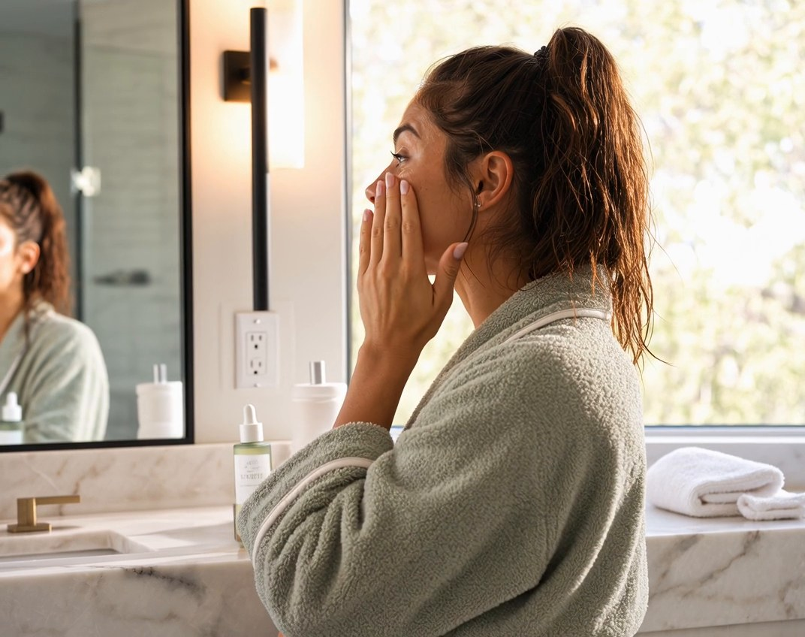
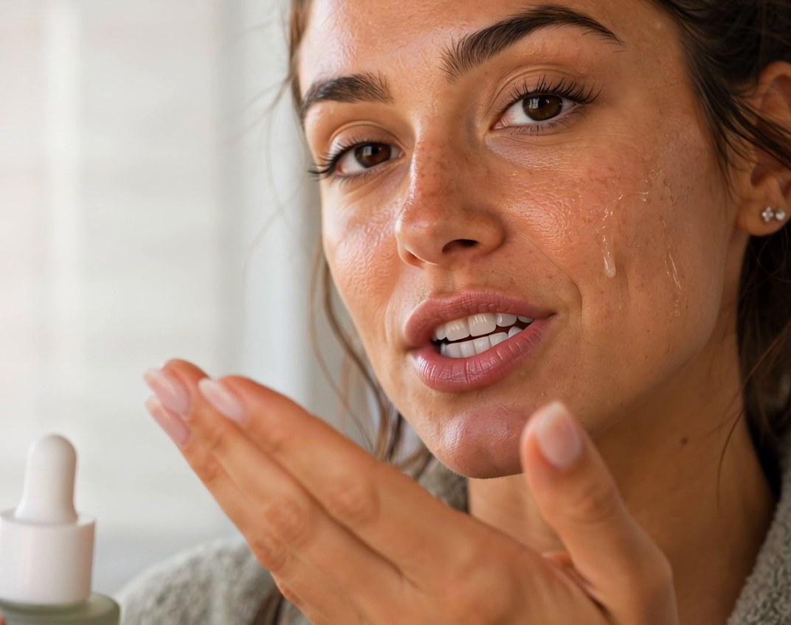
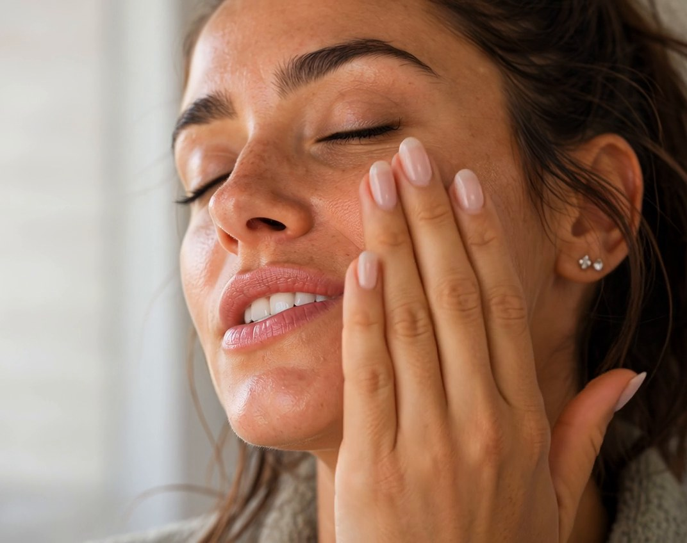
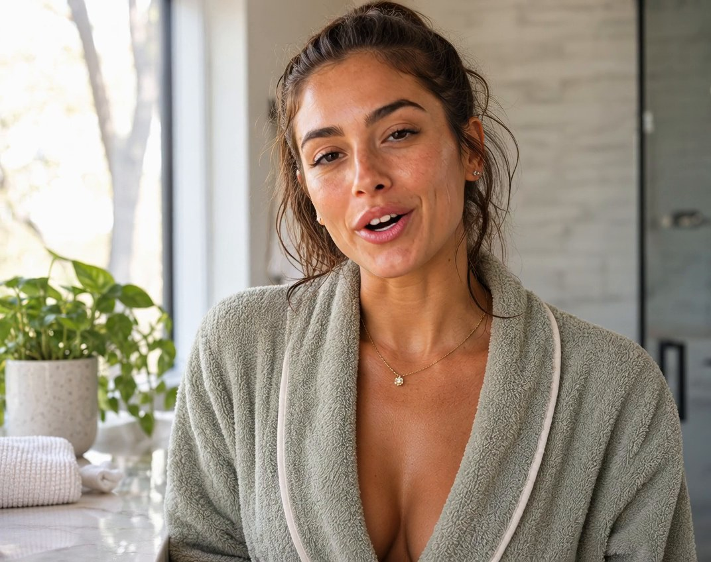

Make the creator feel real.
Social-first beauty concept built around natural expression, skincare ritual and intimate close-up imagery, designed to feel native to creator-led content.
Creative direction & AI production · UGC / beauty social concept · Beauty · skincare · creator content · Portfolio concept
Process
Creator Direction → Visual Identity → Generation → Continuity → Editing → Social Adaptation
Campaign frames



